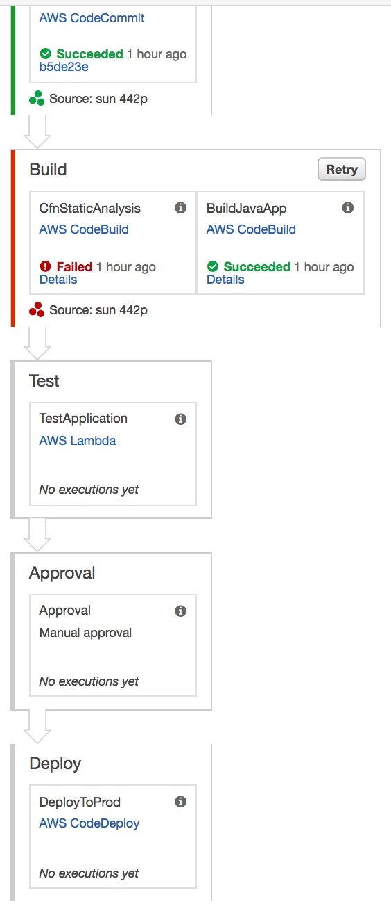
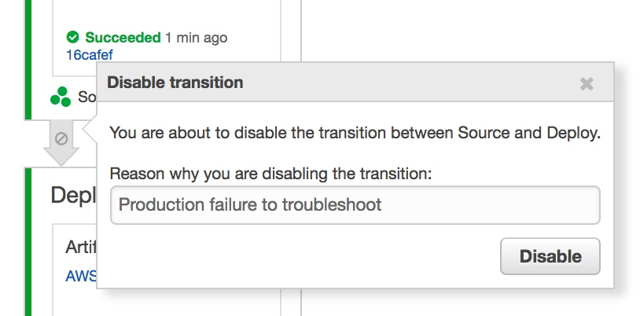

            <div class="main-body-div" id="main-box">
            <div class="container-fluid">
                <div class="row">
                    <div class="col-lg-12 col-xs-12">
                <!-- Main Body Content -->
                    <h2 class="page-title bg-primary">CodePipeline: Stages</h2>

            <div class="inner-body panel">
                    <h4 class="sub-heading">Deployment Pipeline</h4>
                    <div class="inner-body panel">
                        <div class="col-xs-12 col-md-12">
                        <div class="text-center">
                            
                        </div>
                    </div>  
                 </div>  

                 <div class="inner-body panel">
                    <h4 class="sub-heading">Deployment Pipeline Stages for Example Java Application</h4>    
                    <ul class="edited-ul">
                        <li><strong>Source</strong> - Poll the CodeCommit version-control repository looking for changes and let CodePipeline securely store source artifacts in S3.</li>
                        <li><strong>Build</strong> - Run static analysis and build Java application from source files stored securely in S3 via CodePipeline</li>
                        <li><strong>Test</strong> - Test the application using Lambda</li>
                        <li><strong>Approve</strong> - Ensure certain manual verification and validation has been performed via Approvals</li>
                        <li><strong>Deploy</strong> - Deploy the software onto the EC2 instance(s) using CodeDeploy</li>
                    </ul>
                 </div> 
        
                 <div class="inner-body panel">
                    <h4 class="sub-heading">Introduction</h4>
                    <div class="inner-body panel">
                        <p>Let's have a look at AWS CodePipeline in a bit more detail. In CodePipeline, Stages are composed of a collection of Actions. Actions actually perform the work in a pipeline. Within Actions, you'll see integration with other tools, running commands to build, test, deploy, and release your service. Currently, there are six Action types: Source, Build, Test, Deploy, Invoke, and Approval. In this sample, we're just using two types: Source and Build. You can run actions in parallel. A stage is not complete until all actions are successful.</p>
                        <p>You can enable and disable transitions to acts as gates between stages and several other features but let's not get ahead of ourselves as you'll be learning more about this and other features of CodePipeline in other lessons.</p>
                        <p>With CodePipeline, you can - </p>
                        <ul class="edited-ul">
                            <li>"<strong>Automate your release processes</strong> - AWS CodePipeline fully automates your release process from end to end, starting from your source repository through build, test, and deployment. You can prevent changes from moving through a pipeline by including a manual approval action in any stage except a Source stage. You can automatically release when you want, in the way you want, on the systems of your choice, across one instance or multiple instances.</li>
                            <li><strong>Establish a consistent release process:</strong> - Define a consistent set of steps for every code change. AWS CodePipeline runs each stage of your release according to your criteria.</li>
                            <li><strong>Speed up delivery while improving quality:</strong> - You can automate your release process to allow your developers to test and release code incrementally and speed up the release of new features to your customers.</li>
                            <li><strong>Use your favorite tools</strong> - You can incorporate your existing source, build, and deployment tools into your pipeline. For a full list of AWS services and third-party tools currently supported by AWS CodePipeline, see <a href="http://docs.aws.amazon.com/codepipeline/latest/userguide/integrations.html">Product and Service Integrations</a>.</li>
                            <li><strong>View progress at-a-glance:</strong> - You can review real-time status of your pipelines, check the details of any alerts, retry failed actions, view details about the source revisions used in the latest pipeline execution in each stage, and manually rerun any pipeline." (<a href="http://docs.aws.amazon.com/codepipeline/latest/userguide/welcome.html">Source</a>)</li>
                        </ul>
                    </div>  
                 </div>  


                 <div class="inner-body panel">
                    <h4 class="sub-heading">Create a Pipeline using the AWS CodePipeline Console</h4>
                    <div class="inner-body panel">
                        <p>In this demonstration, you’ll perform a simple walkthrough of a two-stage pipeline using the CodePipeline console. This is based on AWS’ <a href="http://docs.aws.amazon.com/codepipeline/latest/userguide/tutorials-simple-s3.html">Simple Pipeline Walkthrough</a>.</p>
                        <p>Using the AWS console is often the best way to get familiar with the concepts around any new AWS service. The console is also a good way to view the status of resource configuration and attributes.</p>
                        <p><strong>Create an application and deployment in CodeDeploy</strong> - To create an application and deployment, go to the AWS Console and launch the <a href="https://console.aws.amazon.com/codedeploy/">CodeDeploy service</a>. Choose the <strong>Sample deployment wizard</strong> button. Choose <strong>Sample Deployment</strong> and click <strong>Next Step</strong>. </p>
                        <p>On the next page, choose <strong>Amazon Linux</strong> as the Operating System, then choose your <strong>EC2 Key Pair</strong> from the drop down and you’ll want to keep the Name and CodeDeployDemo defaults for Tag Key and Value. Finally, click <strong>Launch Instances</strong>. You’ll need to wait several minutes while CodeDeploy launches a CloudFormation stack that provisions three EC2 instances and installs the CodeDeploy agent on each of these instances. Once the instances have been launched, click <strong>Next step</strong>.</p>
                        <p>Enter an <strong>Application Name</strong> (or just use the default name) and click <strong>Next step</strong>. Click <strong>Next step</strong> from the Revision page. From the Deployment Group page, accept the defaults and click <strong>Next step</strong>. From the Service Role page, select an <strong>IAM role</strong> with access to CodeDeploy resources (this should have been previously created when you launched the EC2 instances for CodeDeploy). Click <strong>Next step</strong>. Review the Deployment Configuration and click <strong>Next step</strong>. From the Review page, click <strong>Deploy Now</strong>.</p>
                        <p><strong>Access the application deployed by CodeDeploy</strong> - By going through these steps, you will launch a deployment of a simple web application across three EC2 instances. Check the CodeDeploy console for deployment status. Once everything is successful, choose, click View All Instances and click on the one of the links in the in Instance ID column to bring up the EC2 console. From the details pane, copy the Public IP and paste it into your browser. You should see a page that says something similar to “Congratulations. This application was deployed using AWS CodeDeploy.”.</p>
                        <p><strong>Upload an application distribution to S3</strong> - Next, you will download the CodePipeline/CodeDeploy application distribution by going to the link to the CodePipeline/CodeDeploy distribution provided in the Resources section in this post. Upload the zip file to an S3 bucket in your AWS account and make note of your bucket name and key as you will be using it when creating a pipeline in CodePipeline. Make sure you enable versioning on the S3 bucket by selecting Properties for the bucket, clicking on Versioning and then Enable Versioning.</p>
                        <p><strong>Create a Pipeline</strong> -Once this is a complete, go to the <a href="https://console.aws.amazon.com/codepipeline/">CodePipeline console</a> and click Create pipeline. Enter your pipeline name and click Next step. Choose Amazon S3 as the Source provider followed by the S3 Location of the location (e.g. <strong>s3://stelligent-tmp/aws-codepipeline-s3-aws-codedeploy_linux.zip</strong>  where <strong>stelligent-tmp</strong> is the bucket name and <strong>aws-codepipeline-s3-aws-codedeploy_linux.zip</strong> is the key) where you uploaded the zip file located in (<a href="https://github.com/awslabs/aws-codepipeline-s3-aws-codedeploy_linux/tree/master/dist">GitHub</a>). Click <strong>Next step</strong>. Choose <strong>No Build</strong> as the Build provider and click <strong>Next step</strong>. From the Beta page, choose <strong>AWS CodeDeploy</strong> as the Deployment provider and enter the Application name and Deployment group that you defined when create the sample CodeDeploy deployment. Click <strong>Next step</strong>. Choose <strong>AWS-CodePipeline-Service</strong> as your IAM Role name (or another role that has proper access to the CodePipeline services) on the AWS Service Role page and click <strong>Next step</strong>. Review your pipeline and click <strong>Create pipeline</strong>.</p>
                        <p><strong>Access the application deployed by CodeDeploy and orchestrated by CodePipeline</strong> - From the CodePipeline console you can monitor the stages and actions for this simple two-stage pipeline. Once it successfully completes, refresh the page where you copied the URL when setting up CodePipeline. You should see a message similar to "Congratulations! You have successfully created a pipeline that retrieved this source application from an Amazon S3 bucket and deployed it to three Amazon EC2 instances using AWS CodeDeploy." You’ve successfully orchestrated a CodeDeploy deployment that deploy a simple application from an S3 bucket.</p>
                        <p><strong>Delete your Pipeline</strong> - From the CodePipeline console, select the pipeline you created and click Edit. Then, click Delete and enter the name of the pipeline you’d like to delete. You can delete your CodeDeploy application and CloudFormation stacks as well.</p>
                        <p>For more information, see: <em><a href="https://stelligent.com/2016/03/08/create-a-pipeline-using-the-aws-codepipeline-console/">Create a Pipeline using the AWS CodePipeline Console</a></em></p>
                    </div>  
                 </div> 

                        <div class="inner-body panel">
                        <h4 class="sub-heading">Stages</h4>
                        <p>Each stage has a unique name within a pipeline, and contains a sequence of actions as part of its workflow. A stage can only process one revision at a time. A revision must run through a stage before the next revision can run through it. All actions configured for a stage must be completed successfully before the stage is considered complete. After a stage is complete, the pipeline will automatically transition the revision and its artifacts created by the actions in that stage to the next stage in the pipeline (<em><a href="http://docs.aws.amazon.com/codepipeline/latest/userguide/concepts.html">Source</a></em>)</p>
                        <p>While there are many different types of limits in CodePipeline. Here are a few of the most salient: </p>
                        <ul class="edited-ul">
                            <li><strong>Number of stages in a pipeline </strong> - Minimum of 2, maximum of 10</li>
                            <li><strong>Number of actions in a stage</strong> - Minimum of 1, maximum of 20</li>
                            <li><strong>Maximum number of parallel actions in a stage</strong> - Maximum of 5</li>
                            <li><strong>Maximum number of sequential actions in a stage</strong> - Maximum of 10</li>
                        </ul>
                        <p>For more information see <a href="http://docs.aws.amazon.com/codepipeline/latest/userguide/limits.html">Limits in AWS CodePipeline</a> and <a href="http://docs.aws.amazon.com/codepipeline/latest/userguide/reference-pipeline-structure.html">Action Structure Requirements in AWS CodePipeline</a>.</p>
                    </div>  

                    <div class="inner-body panel">
                        <h4 class="sub-heading">Actions</h4>
                        <p>"Every stage contains at least one action, which is some kind of task performed on the artifact in that stage. Pipeline actions occur in a specified order, in sequence or in parallel, as determined in the configuration of the stage." (<a href="http://docs.aws.amazon.com/codepipeline/latest/userguide/concepts.html">Source)</a></p>


                    <div class="inner-body panel">
                        <table style="width:100%" border="1">
                          <tr>
                            <th>Action Type</th>
                            <th>Support Providers</th> 
                          </tr>
                          <tr>
                            <td><strong>Source</strong></td>
                            <td>Amazon S3, AWS CodeCommit, GitHub</td> 
                          </tr>
                          <tr>
                            <td><strong>Build</strong></td>
                            <td>AWS CodeBuild, <a href="https://aws.amazon.com/codepipeline/product-integrations/">Third-Party Providers</a></td>
                          </tr>
                          <tr>
                            <td><strong>Test</strong></td>
                            <td>AWS CodeBuild, <a href="https://aws.amazon.com/codepipeline/product-integrations/">Third-Party Providers</a></td>
                          </tr>
                          <tr>
                             <td><strong>Deploy</strong></td>
                            <td>AWS CodeDeploy, AWS CloudFormation, Amazon ECS, AWS Elastic Beanstalk, AWS OpsWorks, <a href="https://aws.amazon.com/codepipeline/product-integrations/">Third-Party Providers</a></td>
                          </tr>
                          <tr>
                            <td><strong>Invoke</strong></td>
                            <td>AWS Lambda</td>
                          </tr>
                          <tr>
                            <td><strong>Approval</strong></td>
                            <td>Manual</td>
                          </tr>
                        </table>
                    </div>  


                        <p>"If your release process includes activities that are not included in the default actions, such as an internally developed build process or a test suite, you can create a custom action for that purpose and include it in your pipeline." (<a href="http://docs.aws.amazon.com/codepipeline/latest/userguide/actions-create-custom-action.html">Source</a>)</p>
                    </div>

                    <div class="inner-body panel">
                        <h4 class="sub-heading">Artifacts</h4>
                        <p>Each action can declare input and output artifacts that will be stored in an S3 bucket. These are objects that it will either expect to have before it runs, or objects that it will produce and make available after it runs. </p>
                    </div>

                 <div class="inner-body panel">
                    <h4 class="sub-heading">Edit a pipeline</h4>
                    <div class="inner-body panel">
                        <p>To edit a pipeline, follow the instructions below -</p>
                        <ul class="edited-ul">
                            <li>From the <a href="https://console.aws.amazon.com/codepipeline/">AWS CodePipeline console</a>, select the pipeline you previously created</li>
                            <li>Select <strong>Edit</strong></li>
                            <li>Add a new <strong>Stage</strong></li>
                            <li>Add an <strong>Action</strong></li>
                            <li><strong>Delete</strong> an <strong>Action</strong></li>
                            <li><strong>Edit</strong> an <strong>Action</strong></li>
                        </ul>
                    </div>  
                 </div>  

                 <div class="inner-body panel">
                    <h4 class="sub-heading">Delete a Pipeline</h4>
                    <div class="inner-body panel">
                        <p>To delete a pipeline -</p>
                        <ul class="edited-ul">
                            <li>From the <a href="https://console.aws.amazon.com/codepipeline/">AWS CodePipeline console</a>, select the pipeline you previously created</li>
                            <li>Select <strong>Edit</strong></li>
                            <li>Select <strong>Delete</strong></li>
                            <li>Type in the name of the pipeline to confirm deletion and select <strong>Delete</strong></li>
                        </ul>
                    </div>  
                 </div> 


                 <div class="inner-body panel">
                    <h4 class="sub-heading">Revision</h4>
                    <div class="inner-body panel">
                        <p>"A revision is a change made to a source that is configured in a source action for AWS CodePipeline, such as a pushed commit to a GitHub repository or an update to a file in a versioned Amazon S3 bucket." (<em><a href="http://docs.aws.amazon.com/codepipeline/latest/userguide/concepts.html">Source</a></em>)</p>
                    </div>  
                 </div>  


                 <div class="inner-body panel">
                    <h4 class="sub-heading">Transitions</h4>
                    <div class="inner-body panel">
                        <p>To disable a transition-</p>
                        <div class="text-center">
                            
                        </div>
                        <figure class="highlight">
                            <pre>
                                <code class="language-html" data-lang="html">aws codepipeline disable-stage-transition --pipeline-name MyFirstPipeline --stage-name Staging --transition-type Inbound --reason "My Reason"</code>
                            </pre>
                        </figure>

                        <p>To enable a transition-</p>
                        <figure class="highlight">
                            <pre>
                                <code class="language-html" data-lang="html">aws codepipeline enable-stage-transition --pipeline-name MyFirstPipeline --stage-name Staging  --transition-type Inbound</code>
                            </pre>
                        </figure>
                    </div>  
                 </div>   


                 <div class="inner-body panel">
                    <h4 class="sub-heading">Export a Pipeline</h4>
                    <div class="inner-body panel">
                        <p>After manually creating a pipeline, you can export its contents in JSON format using the CLI. This is helpful when you want to run it from the CLI later or through AWS CloudFormation</p>
                        <p>To pipe the contents of a specific pipeline to a JSON file, run the command below replacing <strong>YOUR_PIPELINE_NAME</strong> with your pipeline name - as found at in your <a href="https://console.aws.amazon.com/codepipeline/">AWS CodePipeline Console</a>.</p>
                        <figure class="highlight">
                            <pre>
                                <code class="language-html" data-lang="html">aws codepipeline get-pipeline --name YOUR_PIPELINE_NAME > my-pipeline.json</code>
                            </pre>
                        </figure>
                        <p>For more information, see <a href="http://docs.aws.amazon.com/cli/latest/reference/codepipeline/get-pipeline.html">get-pipeline</a>.</p>
                    </div>  
                 </div>  
